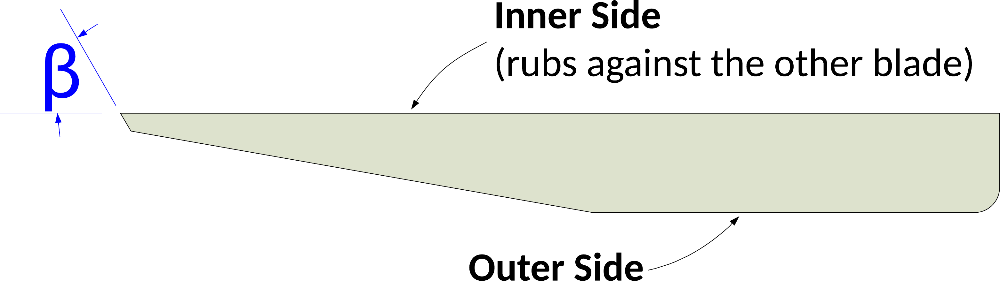

|
|
|
Sewing Scissors |

Scissor parts |
|

Sectional view of the cutting blade |
Scissors are sharpened according to the angles shown below.
Some scissors have differing angles for the Thumb Blade (shown in red on the picture below) vs. the Fingers Blade (shown in blue on the picture below). In those cases, separate angles are shown in the table below.
The picture to the right shows a sectional view of the cutting blade.
|
Beautiful things come together one stitch at a time. Anonymous |

SC-60 scissors jig

SVX-150 scissors jig
The Tormek SC-60 Scissors jig is the best to use for these. The Tormek SVX-150 Scissors jig will also work well.
When sharpening scissors, use the vertical position with the grindstone rotating towards the blade. This keeps the SC-60 or SVX-150 properly aligned to the grindstone. (If you use the horizontal position, the grindstone will pull the scissors away from the jig.)
However, if you are sharpening left-handed scissors and they cannot be disassembled into the two pieces, you will need to sharpen from the horizontal position as the piece not being sharpened would interfere with the process otherwise (it would hit the Tormek machine).
Use of diamond grinding wheels is not recommended. The sharpness of the angle for sharpening can damage the diamiond wheel. (And the SG grindstone works quite well.)

Example icon
Sharpness scales (as shown in the grey icon to the left) are used to indicate the recommended sharpness for the blades noted above. You can click on any of the icons showing the sharpness scale and be redirected to the page describing this more. Lower numbers are duller; higher numbers sharper.
These are general recommendations; you will need to use your own judgment, based on the knive’s intended purpose.